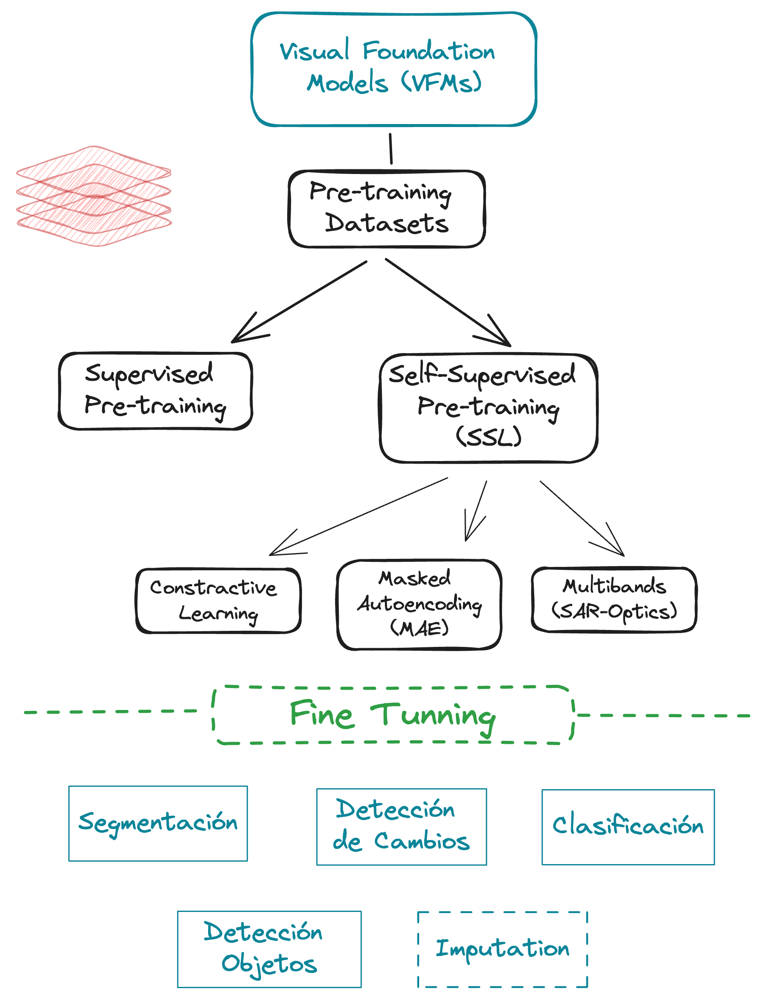

2 Papers Review: VFM
Avances recientes en modelos de fundamentales de Visión en la Percepción Remota
2.1 Introducción
2.1.1 Contexto general
El Remote Sensing (teledetección) ha emergido como una herramienta crucial para la observación y análisis del planeta Tierra, permitiendo monitorear fenómenos ambientales y territoriales con un nivel de detalle sin precedentes. Tecnologías como las imágenes satelitales y los sistemas aéreos han facilitado la recopilación continua de datos espaciales de alta resolución, lo que es fundamental para aplicaciones como la detección de cambios ambientales, la gestión de desastres naturales, el monitoreo de recursos y la planificación territorial.
En este contexto, los modelos fundacionales (Foundation Models, FMs) representan una innovación disruptiva en el campo de la inteligencia artificial aplicada a la percepción remota. Estos modelos preentrenados sobre grandes volúmenes de datos no etiquetados son capaces de aprender representaciones generales que pueden ajustarse fácilmente a tareas específicas utilizando cantidades relativamente pequeñas de datos anotados. Su flexibilidad ha permitido abordar problemas complejos en teledetección, como la segmentación semántica, la detección de objetos y la clasificación de escenas, optimizando así el análisis de datos multiespectrales y temporales.
Los avances recientes en Visual Foundation Models (VFMs), basados en arquitecturas avanzadas como los Vision Transformers (ViT) y enfoques autosupervisados, han potenciado su aplicabilidad a datos de alta resolución. Este progreso se alinea con la creciente capacidad de procesamiento computacional y la disponibilidad masiva de imágenes satelitales de alta calidad, las cuales aumentan continuamente en resolución espacial y temporal. Estas características posicionan a los VFMs como una herramienta prometedora para enfrentar desafíos territoriales y ambientales, particularmente en regiones como Chile y América Latina, donde los datos geoespaciales son abundantes pero subutilizados.
2.1.2 Objetivos de la revisión
El propósito de esta revisión bibliográfica es:
- Explorar el estado del arte en el desarrollo y aplicaciones de los modelos fundacionales en percepción remota, con un enfoque en los Visual Foundation Models (VFMs).
- Analizar su potencial para abordar problemas territoriales específicos en contextos geográficos de Chile y América Latina.
- Identificar oportunidades y desafíos para la implementación de estos modelos, considerando tanto la creciente disponibilidad de datos geoespaciales como las capacidades computacionales actuales.
- Proponer una base conceptual que sirva como fundamento para evaluar y adaptar VFMs en aplicaciones concretas, maximizando su impacto en problemas como planificación territorial, monitoreo ambiental y manejo de desastres.
2.2 Metodología
2.2.1 Criterios de Inclusión
Para garantizar que los estudios seleccionados sean relevantes y alineados con los objetivos de esta revisión, se definirán los siguientes criterios de inclusión:
- Relevancia temática
- Estudios centrados en modelos fundacionales de visión (VFMs) aplicados a teledetección, específicamente en tareas como detección de cambios, clasificación de uso de suelo, segmetación semántica.
- Investigaciones relacionadas con el uso de datos geoespaciales, imágenes satelitales o aéreas en problemas ambientales y sociales.
- Reciente publicación
- Publicaciones desde 2020 en adelante, considerando la novedad del campo y su evolución rápida.
- Publicaciones en revistas indexadas o conferencias de alto impacto en áreas de inteligencia artificial, percepción remota o teledetección.
- Relevancia geográfica y temática
- Estudios que incluyan aplicaciones en problemas reales relacionados con el medio ambiente y las personas, como:
- Cambio climático, gestión de recursos naturales, agricultura sostenible, planificación urbana, monitoreo de desastres o biodiversidad.
- Preferencia por estudios que incluyan contextos aplicables a Chile o América Latina, aunque no se excluirán estudios con enfoques globales relevantes.
- Disponibilidad de resultados, métricas y códigos
- Estudios que incluyan evaluaciones cuantitativas de desempeño, como métricas de clasificación, segmentación o detección (e.g., IoU, precisión, F1-score).
- Descripción detallada de los datasets utilizados y la metodología aplicada, eventualmente códigos.
- Enfoque en arquitectura y métodos de aprendizaje
- Modelos basados en arquitecturas avanzadas, como Vision Transformers (ViT) y enfoques autosupervisados (e.g., MAE, contrastive learning).
- Innovaciones metodológicas para optimizar el uso de datos no etiquetados o resolver problemas multiespectrales y multitemporales.
2.3 Marco Conceptual
A continuación, se organiza y define cada concepto clave relevante al tema de la revisión bibliográfica sobre modelos fundacionales de visión aplicados a teledetección. Estos conceptos proporcionan el fundamento teórico necesario para comprender el desarrollo y aplicación de los Visual Foundation Models (VFMs) en problemas territoriales y ambientales.

Son modelos de aprendizaje profundo preentrenados sobre grandes volúmenes de datos no etiquetados, diseñados para tareas de visión por computadora. Su arquitectura avanzada, basada en enfoques como Vision Transformers (ViT), los hace altamente adaptables a una variedad de aplicaciones en teledetección, desde segmentación semántica hasta detección de cambios.
2.3.1 Autoencoders Enmascarados (MAE)
Los MAE son modelos de aprendizaje profundo diseñados para reconstruir datos de entrada a partir de una versión parcialmente enmascarada.
- Aplicación en VFMs: En el contexto de la teledetección, los MAE son clave para procesar imágenes satelitales, permitiendo al modelo aprender representaciones robustas incluso con datos incompletos o ruidosos.
2.3.2 Aprendizaje Contrastivo
Es una técnica de aprendizaje autosupervisado que entrena al modelo para distinguir entre pares de datos similares (positivos) y disímiles (negativos).
- Relevancia en VFMs: Es utilizado en modelos como CROMA para aprender representaciones invariantes a sensores múltiples (e.g., radar y ópticos).
2.3.3 Datos Multimodales y Alineación Espacial
- Datos Multimodales: Provienen de sensores diferentes (e.g., Sentinel-1 para radar y Sentinel-2 para óptico), enriqueciendo las representaciones aprendidas por los VFMs.
- Alineación Espacial: Garantiza que los datos de distintos sensores correspondan a la misma ubicación geográfica, asegurando consistencia en las representaciones aprendidas.
2.3.4 Codificación de Posición Relativa (RPE)
Técnica utilizada para incorporar información posicional en modelos basados en transformers. - Impacto en VFMs: Mejora la capacidad de generalización de modelos como CROMA en imágenes más grandes.
2.4 Revisión de los Estudios
Para organizar y analizar los artículos científicos se construyó una tabla que resume información importante para cumplir con los objetivo del presente capítulo, los criterios y contenidos estatal corresponde a los siguientes:
- Referencia: Mencionar los autores y año, incluyendo una referencia breve para seguimiento.
- Objetivo del Estudio: Resumir el problema y la tarea específica abordada.
- Arquitectura: Detallar el modelo utilizado (e.g., ViT, Swin Transformer, MAE).
- Dataset: Especificar los datasets usados, incluyendo resolución y tipo (e.g., SAR, multiespectral).
- Aplicación: Indicar cómo se aplica el modelo (e.g., monitoreo de inundaciones, detección de cultivos).
- Métricas: Proporcionar los valores clave de desempeño.
- Limitaciones: Identificar las barreras técnicas o de aplicación señaladas en el estudio.
- Relevancia para Chile/LatAm: Evaluar la aplicabilidad en contextos locales según problemas ambientales o sociales.
2.4.1 Tabla Resumen General
| Referencia | Objetivo del Estudio | Arquitectura | Dataset | Aplicación | Métricas | Limitaciones | Relevancia para Chile/LatAm |
|---|---|---|---|---|---|---|---|
| Fuller, Millard, and Green (2023) | Desarrollar un framework para aprender representaciones unimodales y multimodales para la Observación de la Tierra, aprovechando objetivos autosupervisados contrastivos y de reconstrucción. | CROMA (autoencoder contrastivo radar-óptico enmascarado), basado en Vision Transformer (ViT), con codificación de posición 2D-ALiBi y X-ALiBi. | BigEarthNet, fMoW-Sentinel, EuroSAT, Canadian Cropland, DFC2020, DW-Expert, MARIDA. Usando imágenes Sentinel-2 (óptico) y Sentinel-1 (radar) a diferentes resoluciones. | Clasificación de imágenes satelitales y segmentación semántica. | Supera el estado del arte (SatMAE) en un promedio de 5.4% y 6.4% en mIoU para backbones ViT-B y ViT-L, respectivamente. | Requiere datos multimodales alineados espacialmente. Alto costo computacional para entrenar modelos grandes. | Alta: Chile posee una amplia cobertura de imágenes Sentinel, lo que permitiría aplicar CROMA para diversas aplicaciones como la clasificación de uso y cobertura del suelo, monitoreo de recursos hídricos, agricultura de precisión, entre otras. |
| Szwarcman et al. (2024) | El estudio busca desarrollar un modelo de base geoespacial multi-temporal llamado Prithvi-EO-2.0. El objetivo es mejorar la capacidad de generalización y la eficiencia de datos en tareas de teledetección, abordando las limitaciones de los modelos existentes en el manejo de la multi-temporalidad. | Prithvi-EO-2.0 utiliza una arquitectura de codificador-decodificador asimétrico basada en Vision Transformer (ViT) y entrenada con el método de autoencoder enmascarado (MAE). Se incorporan innovaciones como incrustaciones temporales y de ubicación, así como la integración de metadatos de imágenes satelitales. | El modelo se entrena con un conjunto de datos global de 4.2 millones de muestras de series temporales del archivo Harmonized Landsat Sentinel-2 (HLS) de la NASA a una resolución de 30m. El conjunto de datos abarca una década de imágenes satelitales. | Prithvi-EO-2.0 se aplica a diversas tareas de teledetección, incluyendo: - Monitoreo de desastres (detección de inundaciones, mapeo de cicatrices de incendios forestales, mapeo de intensidad de quemaduras, detección de deslizamientos de tierra). - Mapeo de uso del suelo y cultivos (segmentación de cultivos en EE. UU., clasificación multi-temporal de la cobertura del suelo y cultivos en Europa). - Monitoreo de la dinámica de los ecosistemas multimodales (estimación de la biomasa sobre el suelo, estimación de la productividad primaria bruta). | El rendimiento se evalúa utilizando métricas como la precisión general, el índice de Jaccard medio (mIoU), la puntuación F1 y el error cuadrático medio (RMSE) en el benchmark GEO-Bench y en las tareas posteriores. Prithvi-EO-2.0 supera a los modelos de base geoespacial existentes en el benchmark GEO-Bench hasta en un 8% y demuestra un rendimiento de vanguardia en las tareas posteriores. | El estudio señala la dificultad de generalizar a tareas con resoluciones espaciales significativamente diferentes a las utilizadas en el entrenamiento previo. También se menciona la necesidad de explorar estrategias de aumento de datos para mejorar el rendimiento en conjuntos de datos más pequeños. | Prithvi-EO-2.0 tiene un alto potencial para abordar problemas ambientales y sociales relevantes en Chile y Latinoamérica. Su capacidad para el monitoreo de desastres, el mapeo de la cobertura del suelo y la estimación de variables ecosistémicas podría ser valiosa para: - Monitoreo de incendios forestales y sequías. - Gestión de recursos hídricos. - Monitoreo de la deforestación y cambios en el uso del suelo. - Evaluación de la productividad agrícola y seguridad alimentaria. - Evaluación de riesgos de desastres naturales como deslizamientos de tierra e inundaciones. |
| Astruc et al. (2024) | El estudio busca desarrollar un modelo de aprendizaje automático (AnySat) capaz de analizar datos de Observación de la Tierra (EO) con diferentes resoluciones, escalas y modalidades. Busca superar las limitaciones de los modelos existentes que, generalmente, se entrenan en un solo conjunto de datos con un formato específico. El objetivo es crear un modelo base que se pueda aplicar a diversos conjuntos de datos de EO sin necesidad de reentrenamiento desde cero. | AnySat utiliza una arquitectura de codificador-combinador-predictor basada en Vision Transformer (ViT) y una estrategia de entrenamiento auto-supervisado basada en la arquitectura de predicción de incrustaciones conjuntas (JEPA). Se añaden codificadores de parches adaptables a la escala para manejar diferentes tamaños de entrada y un codificador temporal ligero para datos de series de tiempo. | GeoPlex es un conjunto de datos multimodal con 11 modalidades, integrando imágenes aéreas, satelitales, radares y sensores ópticos. Incluye diversas resoluciones, tiempos de revisita y canales, complementado con 4 conjuntos externos (SICKLE, BraDD-S1TS, TimeSen2Crop, Sen1Flood11). | AnySat se evalúa en diversas tareas de monitoreo ambiental, incluyendo: - Mapeo de la cobertura terrestre. - Identificación de especies de árboles. - Clasificación del tipo de cultivo. - Detección de cambios (deforestación). - Segmentación de inundaciones. | Se utilizan métricas como la puntuación F1, el índice de Jaccard medio (mIoU), la precisión general (OA) para evaluar el rendimiento de AnySat en las diferentes tareas. AnySat logra resultados de vanguardia en las tareas de clasificación, segmentación y detección de cambios en diversos conjuntos de datos, incluso superando a modelos especializados entrenados en conjuntos de datos específicos. | Se menciona la dificultad de generalizar a tareas con resoluciones espaciales significativamente diferentes a las utilizadas en el entrenamiento previo. Aunque se ha demostrado que el modelo maneja diferentes resoluciones, se necesita más investigación para garantizar un rendimiento óptimo en todas las escalas. | AnySat tiene gran potencial en Chile y Latinoamérica para monitorear deforestación, desastres naturales, agricultura, y recursos hídricos. Su capacidad multiescalar y multimodal es clave, aunque requiere adaptación a contextos locales y diferentes resoluciones espaciales. |
| Wang et al. (2022) | Proponer una red neuronal (ASN) para la detección de cambios bi-temporales, integrando pares de características asimétricas y refinamiento de características. | Adaptive Symmetric Network (ASN) con codificador-decodificador, utilizando bloques residuales, Xception o Squeeze-and-Excitation. | SECOND dataset (multi-clase, hasta 36 tipos de cambio). No se especifica la resolución ni los sensores. | Detección de cambios en imágenes satelitales para análisis de urbanización, desastres naturales, etc. | ASN-ATL supera HRSCD.str4 en 1.9 en mIoU y 2.2 en SeK con bloques Xception. | No se especifica la resolución de las imágenes ni los sensores utilizados. | Media: La detección de cambios es relevante para Chile, por ejemplo, para el monitoreo de la deforestación o la expansión urbana. La aplicabilidad de ASN dependerá de la disponibilidad de datasets con características similares a SECOND. |
| Chen et al. (2023) | Aprovechar el conocimiento general de un modelo fundacional (SAM) para construir una red de detección de cambios eficiente (TTP). | Time-Traveling Prompt (TTP), basado en el modelo fundacional Segment Anything Model (SAM), con ajuste fino de rango bajo, una puerta de activación de viaje en el tiempo y un decodificador multinivel. | LEVIR-CD dataset. No se especifica la resolución ni los sensores. | Detección de cambios en imágenes satelitales para el análisis del desarrollo urbano, monitoreo de desastres naturales, etc. | TTP logra un F1 de 92.1 e IoU de 85.6, superando a métodos como WNet y CSTSUNet. | Dependencia del modelo fundacional SAM. No se especifica la resolución ni los sensores de las imágenes. | Media: El uso de modelos fundacionales como SAM para la detección de cambios en Chile es prometedor. Se requiere investigar la adaptabilidad de TTP a las condiciones locales. |
| Muszynski et al. (2024) | Evaluar la capacidad de los modelos fundacionales geoespaciales para estimar la biomasa aérea a partir de imágenes satelitales con pocos parámetros ajustables. | Dos modelos fundacionales geoespaciales (Global GFM y Local GFM) con encoder congelado y una capa de regresión. | Imágenes HLS de la NASA de tres ecorregiones en Brasil. Resolución de 30 metros. | Estimación de biomasa aérea para el estudio del ciclo del carbono y la gestión forestal. | Los GFMs con encoder congelado logran un rendimiento comparable al de una U-Net entrenada desde cero, con 13 veces menos parámetros. | La generalización a otras regiones puede verse afectada por la variabilidad en las características del bosque. | Media: La estimación de biomasa aérea es relevante para el monitoreo forestal en Chile. Se necesita evaluar la transferibilidad de los GFMs a los bosques nativos del país. |
| Tseng et al. (2023) | Aborda la escasez de datos etiquetados en la teledetección mediante el desarrollo de Presto, un modelo ligero de Transformers preentrenado para series temporales. | PRESTO , Transformers con codificador-decodificador, basado en Masked Autoencoding | Diversos: CropHarvest, TreeSatAI, EuroSAT, Sen1Floods11, S2-Agri100; resolución y tipo de datos variables (SAR, multiespectral). | Clasificación de cultivos, detección de especies de árboles, clasificación de cobertura del suelo, mapeo de inundaciones, monitoreo de cultivos. | Precisión variable según la tarea; en algunos casos supera a los modelos de última generación. | Limitado a datos de series temporales de píxeles. Requiere adaptación para imágenes de alta resolución. | Alta: útil para monitoreo agrícola, gestión forestal, y evaluación de riesgos naturales en Chile y LatAm. |
| Hsu and Arundel (2023) | Evalúa el desempeño del modelo geoespacial Prithvi para el mapeo de inundaciones. | Transformers (ViT) preentrenado con Masked Autoencoder (MAE) | Sen1Floods11; imágenes Sentinel-1 y Sentinel-2, resolución de 10m. | Mapeo de inundaciones | Transferibilidad en datos no vistos; menor precisión que U-Net y Segformer en datos conocidos. | Requiere 3 bandas adicionales a RGB y carece de arquitectura de extremo a extremo para análisis de alto nivel. | Alta: relevante para evaluación de daños, planificación de emergencias y diseño de sistemas de alerta temprana en Chile. |
| Li et al. (2023) | Investiga métodos SSL para reconocimiento automático de objetivos (ATR) en imágenes SAR; propone SAR-JEPA para predicción de gradientes multiescala. | Basado en Masked Image Modeling (MIM) y Joint-Embedding Predictive Architecture (JEPA). | MSTAR, FUSAR-Ship, SAR-ACD; imágenes SAR. | Reconocimiento de objetivos en imágenes SAR (vehículos, barcos, aviones). | Supera métodos SSL en clasificación con pocos disparos. | Requiere grandes datasets SAR para preentrenamiento. | Moderada: útil para monitoreo de deforestación, pesca ilegal, y evaluación de desastres en Chile y LatAm. |
| Reed et al. (2023) | Explora el aprendizaje de representaciones geoespaciales multiescala utilizando Scale-MAE, un MAE sensible a la escala. | MAE con codificador ViT y decodificador piramidal Laplaciano | Functional Map of the World (FMoW), RESISC-45, entre otros; imágenes RGB y multiespectrales de diferentes resoluciones. | Clasificación de uso del suelo, segmentación semántica (detección de edificios). | Muestra robustez a la escala y supera a SatMAE y ConvMAE en algunas tareas. | Requiere investigación adicional sobre la influencia del tamaño del parche en el rendimiento. | Alta: aplicable al mapeo de cobertura del suelo, monitoreo urbano y análisis de imágenes satelitales en Chile y LatAm. |
2.4.2 Revisión de Artículos importantes
Para cada estudio, incluir las siguientes subsecciones:
- [Título del Estudio] Referencia completa: Autores, título, publicación, año.
- Objetivo del estudio: ¿Qué problema aborda el artículo?
- Métodos utilizados: Arquitecturas, datasets, técnicas de preentrenamiento.
- Resultados principales: Métricas, tareas downstream, ventajas frente a otros enfoques.
- Limitaciones identificadas: Críticas o desafíos no resueltos.
- Relación con otros estudios: Comparación o integración con investigaciones similares.
Nota: Usa tablas o gráficos para resumir comparaciones clave, como métricas de rendimiento en tareas downstream.
2.5 Discusión
2.5.1 Análisis comparativo
- Comparar las fortalezas y debilidades de los estudios analizados.
- Identificación de patrones comunes en resultados o enfoques.
2.5.2 Brechas en la literatura
- Identificar áreas no exploradas o que requieren mayor desarrollo.
2.5.3 Implicaciones para tu investigación
- Cómo los resultados revisados fundamentan tu propuesta de tesis.
- Adaptaciones o mejoras sugeridas para futuros trabajos.
2.6 Conclusión y Propuesta
2.6.1 Conclusión de la revisión
- Síntesis de los hallazgos más importantes.
2.6.2 Propuesta de tesis
- Presentar la pregunta o hipótesis principal.
- Breve descripción del enfoque metodológico y su relación con la revisión.
2.7 Base General
| Abbreviation | Title | Publication | Paper | Code & Weights |
|---|---|---|---|---|
| GeoKR | Geographical Knowledge-Driven Representation Learning for Remote Sensing Images | TGRS2021 | GeoKR | link |
| - | Self-Supervised Learning of Remote Sensing Scene Representations Using Contrastive Multiview Coding | CVPRW2021 | Paper | link |
| GASSL | Geography-Aware Self-Supervised Learning | ICCV2021 | GASSL | link |
| SeCo | Seasonal Contrast: Unsupervised Pre-Training From Uncurated Remote Sensing Data | ICCV2021 | SeCo | link |
| DINO-MM | Self-supervised Vision Transformers for Joint SAR-optical Representation Learning | IGARSS2022 | DINO-MM | link |
| SatMAE | SatMAE: Pre-training Transformers for Temporal and Multi-Spectral Satellite Imagery | NeurIPS2022 | SatMAE | link |
| RS-BYOL | Self-Supervised Learning for Invariant Representations From Multi-Spectral and SAR Images | JSTARS2022 | RS-BYOL | null |
| GeCo | Geographical Supervision Correction for Remote Sensing Representation Learning | TGRS2022 | GeCo | null |
| RingMo | RingMo: A remote sensing foundation model with masked image modeling | TGRS2022 | RingMo | Code |
| RVSA | Advancing plain vision transformer toward remote sensing foundation model | TGRS2022 | RVSA | link |
| RSP | An Empirical Study of Remote Sensing Pretraining | TGRS2022 | RSP | link |
| MATTER | Self-Supervised Material and Texture Representation Learning for Remote Sensing Tasks | CVPR2022 | MATTER | null |
| CSPT | Consecutive Pre-Training: A Knowledge Transfer Learning Strategy with Relevant Unlabeled Data for Remote Sensing Domain | RS2022 | CSPT | link |
| - | Self-supervised Vision Transformers for Land-cover Segmentation and Classification | CVPRW2022 | Paper | link |
| BFM | A billion-scale foundation model for remote sensing images | Arxiv2023 | BFM | null |
| TOV | TOV: The original vision model for optical remote sensing image understanding via self-supervised learning | JSTARS2023 | TOV | link |
| CMID | CMID: A Unified Self-Supervised Learning Framework for Remote Sensing Image Understanding | TGRS2023 | CMID | link |
| RingMo-Sense | RingMo-Sense: Remote Sensing Foundation Model for Spatiotemporal Prediction via Spatiotemporal Evolution Disentangling | TGRS2023 | RingMo-Sense | null |
| IaI-SimCLR | Multi-Modal Multi-Objective Contrastive Learning for Sentinel-1/2 Imagery | CVPRW2023 | IaI-SimCLR | null |
| CACo | Change-Aware Sampling and Contrastive Learning for Satellite Images | CVPR2023 | CACo | link |
| SatLas | SatlasPretrain: A Large-Scale Dataset for Remote Sensing Image Understanding | ICCV2023 | SatLas | link |
| GFM | Towards Geospatial Foundation Models via Continual Pretraining | ICCV2023 | GFM | link |
| Scale-MAE | Scale-MAE: A Scale-Aware Masked Autoencoder for Multiscale Geospatial Representation Learning | ICCV2023 | Scale-MAE | link |
| DINO-MC | DINO-MC: Self-supervised Contrastive Learning for Remote Sensing Imagery with Multi-sized Local Crops | Arxiv2023 | DINO-MC | link |
| CROMA | CROMA: Remote Sensing Representations with Contrastive Radar-Optical Masked Autoencoders | NeurIPS2023 | CROMA | link |
| Cross-Scale MAE | Cross-Scale MAE: A Tale of Multiscale Exploitation in Remote Sensing | NeurIPS2023 | Cross-Scale MAE | link |
| DeCUR | DeCUR: decoupling common & unique representations for multimodal self-supervision | ECCV2024 | DeCUR | link |
| Presto | Lightweight, Pre-trained Transformers for Remote Sensing Timeseries | Arxiv2023 | Presto | link |
| CtxMIM | CtxMIM: Context-Enhanced Masked Image Modeling for Remote Sensing Image Understanding | Arxiv2023 | CtxMIM | null |
| FG-MAE | Feature Guided Masked Autoencoder for Self-supervised Learning in Remote Sensing | Arxiv2023 | FG-MAE | link |
| Prithvi | Foundation Models for Generalist Geospatial Artificial Intelligence | Arxiv2023 | Prithvi | link |
| RingMo-lite | RingMo-lite: A Remote Sensing Multi-task Lightweight Network with CNN-Transformer Hybrid Framework | Arxiv2023 | RingMo-lite | null |
| - | A Self-Supervised Cross-Modal Remote Sensing Foundation Model with Multi-Domain Representation and Cross-Domain Fusion | IGARSS2023 | Paper | null |
| EarthPT | EarthPT: a foundation model for Earth Observation | NeurIPS2023 CCAI workshop | EarthPT | link |
| USat | USat: A Unified Self-Supervised Encoder for Multi-Sensor Satellite Imagery | Arxiv2023 | USat | link |
| FoMo-Bench | FoMo-Bench: a multi-modal, multi-scale and multi-task Forest Monitoring Benchmark for remote sensing foundation models | Arxiv2023 | FoMo-Bench | link |
| AIEarth | Analytical Insight of Earth: A Cloud-Platform of Intelligent Computing for Geospatial Big Data | Arxiv2023 | AIEarth | link |
| - | Self-Supervised Learning for SAR ATR with a Knowledge-Guided Predictive Architecture | Arxiv2023 | Paper | link |
| Clay | Clay Foundation Model | - | null | link |
| Hydro | Hydro–A Foundation Model for Water in Satellite Imagery | - | null | link |
| U-BARN | Self-Supervised Spatio-Temporal Representation Learning of Satellite Image Time Series | JSTARS2024 | Paper | link |
| GeRSP | Generic Knowledge Boosted Pre-training For Remote Sensing Images | Arxiv2024 | GeRSP | GeRSP |
| SwiMDiff | SwiMDiff: Scene-wide Matching Contrastive Learning with Diffusion Constraint for Remote Sensing Image | Arxiv2024 | SwiMDiff | null |
| OFA-Net | One for All: Toward Unified Foundation Models for Earth Vision | Arxiv2024 | OFA-Net | null |
| SMLFR | Generative ConvNet Foundation Model With Sparse Modeling and Low-Frequency Reconstruction for Remote Sensing Image Interpretation | TGRS2024 | SMLFR | link |
| SpectralGPT | SpectralGPT: Spectral Foundation Model | TPAMI2024 | SpectralGPT | link |
| S2MAE | S2MAE: A Spatial-Spectral Pretraining Foundation Model for Spectral Remote Sensing Data | CVPR2024 | S2MAE | null |
| SatMAE++ | Rethinking Transformers Pre-training for Multi-Spectral Satellite Imagery | CVPR2024 | SatMAE++ | link |
| msGFM | Bridging Remote Sensors with Multisensor Geospatial Foundation Models | CVPR2024 | msGFM | link |
| SkySense | SkySense: A Multi-Modal Remote Sensing Foundation Model Towards Universal Interpretation for Earth Observation Imagery | CVPR2024 | SkySense | Targeted open-source |
| MTP | MTP: Advancing Remote Sensing Foundation Model via Multi-Task Pretraining | Arxiv2024 | MTP | link |
| DOFA | Neural Plasticity-Inspired Foundation Model for Observing the Earth Crossing Modalities | Arxiv2024 | DOFA | link |
| MMEarth | MMEarth: Exploring Multi-Modal Pretext Tasks For Geospatial Representation Learning | ECCV2024 | MMEarth | link |
| SARATR-X | SARATR-X: A Foundation Model for Synthetic Aperture Radar Images Target Recognition | Arxiv2024 | SARATR-X | link |
| LeMeViT | LeMeViT: Efficient Vision Transformer with Learnable Meta Tokens for Remote Sensing Image Interpretation | IJCAI2024 | LeMeViT | link |
| SoftCon | Multi-Label Guided Soft Contrastive Learning for Efficient Earth Observation Pretraining | Arxiv2024 | SoftCon | link |
| RS-DFM | RS-DFM: A Remote Sensing Distributed Foundation Model for Diverse Downstream Tasks | Arxiv2024 | RS-DFM | null |
| A2-MAE | A2-MAE: A spatial-temporal-spectral unified remote sensing pre-training method based on anchor-aware masked autoencoder | Arxiv2024 | A2-MAE | null |
| HyperSIGMA | HyperSIGMA: Hyperspectral Intelligence Comprehension Foundation Model | Arxiv2024 | HyperSIGMA | link |
| SelectiveMAE | Scaling Efficient Masked Autoencoder Learning on Large Remote Sensing Dataset | Arxiv2024 | SelectiveMAE | link |
| OmniSat | OmniSat: Self-Supervised Modality Fusion for Earth Observation | ECCV2024 | OmniSat | link |
| MM-VSF | Towards a Knowledge guided Multimodal Foundation Model for Spatio-Temporal Remote Sensing Applications | Arxiv2024 | MM-VSF | null |
| MA3E | Masked Angle-Aware Autoencoder for Remote Sensing Images | ECCV2024 | MA3E | link |
| SpectralEarth | SpectralEarth: Training Hyperspectral Foundation Models at Scale | Arxiv2024 | SpectralEarth | null |
| SenPa-MAE | SenPa-MAE: Sensor Parameter Aware Masked Autoencoder for Multi-Satellite Self-Supervised Pretraining | Arxiv2024 | SenPa-MAE | link |
| RingMo-Aerial | RingMo-Aerial: An Aerial Remote Sensing Foundation Model With A Affine Transformation Contrastive Learning | Arxiv2024 | RingMo-Aerial | null |
| SAR-JEPA | Predicting Gradient is Better: Exploring Self-Supervised Learning for SAR ATR with a Joint-Embedding Predictive Architecture | ISPRS JPRS2024 | SAR-JEPA | link |
| PIS | Pretrain a Remote Sensing Foundation Model by Promoting Intra-instance Similarity | TGRS2024 | PIS | link |
| OReole-FM | OReole-FM: successes and challenges toward billion-parameter foundation models for high-resolution satellite imagery | SIGSPATIAL2024 | OReole-FM | null |
| PIEViT | Pattern Integration and Enhancement Vision Transformer for Self-supervised Learning in Remote Sensing | Arxiv2024 | PIEViT | null |
| SatVision-TOA | SatVision-TOA: A Geospatial Foundation Model for Coarse-Resolution All-Sky Remote Sensing Imagery | Arxiv2024 | SatVision-TOA | link |
| RS-vHeat | RS-vHeat: Heat Conduction Guided Efficient Remote Sensing Foundation Model | Arxiv2024 | RS-vHeat | null |
| Prithvi-EO-2.0 | Prithvi-EO-2.0: A Versatile Multi-Temporal Foundation Model for Earth Observation Applications | Arxiv2024 | Prithvi-EO-2.0 | link |
| AnySat | AnySat: An Earth Observation Model for Any Resolutions, Scales, and Modalities | Arxiv2024 | AnySat | link |